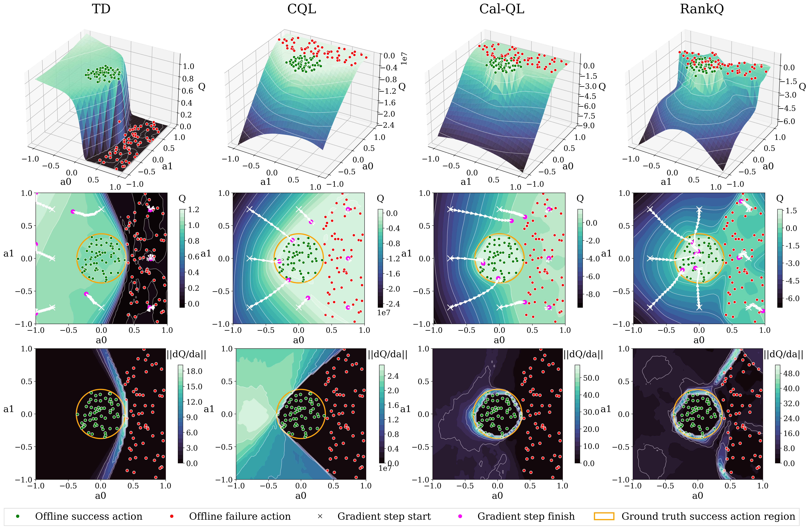
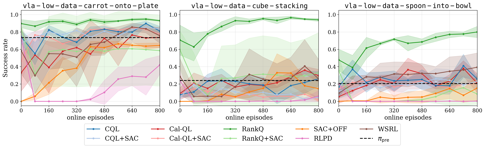
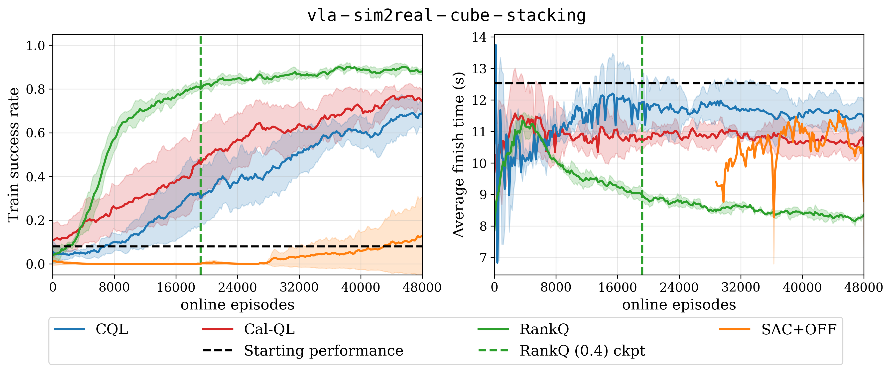

Carrot on plate
3× speed
3× speed
Task: “put the carrot on the plate.”

Toy example visualizing the Q-landscape for a fixed state $s$ and 2D action space $(a_0, a_1) \in \mathcal A$ under different critic objectives after offline training. The first row shows the 3D Q-manifold; the second row shows a 2D projection with eight sampled actions and their gradient ascent trajectories; and the third row shows $\partial Q/\partial a$ magnitudes. By explicitly shaping the Q-landscape, RankQ enables the largest number of trajectories to converge toward the optimal action region.
RankQ shapes the Q-function with self-supervised action ranking to improve offline-to-online policy learning.
+38.2 pp
Average success-rate gain over the next best method across three VLA tasks.
+13.7 pp
Success-rate gain over the next best method with domain randomization.
43.1% → 88.9%
Cube stacking, from the initial VLA to RankQ (0.4), evaluated over 288 experiments.
40%
RankQ (0.4) transfers successfully with 40% of the online training used by Cal-QL.
Compare the initial VLA with RankQ after offline-to-online fine-tuning in the low-data regime. After just 800 online episodes, RankQ substantially outperforms nine baseline methods, achieving an average success rate 38.2 percentage points higher than the next best non-RankQ baseline across these three tasks.
Task: “put the carrot on the plate.”
Task: “stack the green cube on the yellow cube.”
Task: “put the spoon in the bowl.”
We evaluate zero-shot sim-to-real transfer on cube stacking, where the robot must stack the green cube on the yellow cube. We compare two RankQ checkpoints trained in the high-data regime against the initial VLA and Cal-QL over 288 real-world experiments. With just 40% of the online training required by Cal-QL, RankQ (0.4) achieves comparative performance while increasing cube stacking success from 43.1% to 88.9% relative to the initial VLA.
The initial VLA misses the grasp on the green cube and then hovers in confusion. RankQ grasps and stacks the cubes in one attempt.
The initial VLA fails its first grasp attempt and afterward attempts to stack the green cube but ends up pushing the yellow cube out-of-reach. RankQ grasps and stacks the cubes in one attempt.
The initial VLA repeatedly misses the grasp on the green cube. It eventually succeeds but then times out before stacking. RankQ grasps and stacks the cubes in one attempt.
The initial VLA fails its initial grasp and its initial stack attempt. It then gets stuck trying to regrasp. RankQ also fails the initial stack but quickly reattempts the task, succeeding before timeout.
Rather than treating all OOD actions as equally inferior, RankQ enforces structured action ordering in a way that shapes the Q-landscape to point toward optimal actions. We partition the dataset $\mathcal D$ into two unique subsets containing exclusively success and failure trajectories, denoted by $\mathcal D_{\text{success}}$ and $\mathcal D_{\text{failure}}$. For transitions $(s,a) \sim \mathcal D_{\text{success}}$, we construct several classes of self-supervised suboptimal actions that capture different types of deviations from optimal behavior:
These constructions allow us to impose structured ordering constraints. First, we enforce that successful actions are preferred over all suboptimal variants:
Enforcing only this success-ranking constraint would essentially produce a Q-landscape with a gradient field similar to CQL and Cal-QL. Rather than stopping here, we also enforce ordering among suboptimal actions by using action-space proximity to successful actions as a heuristic for relative quality:
Finally, we incorporate failure trajectories to provide additional supervision in low-quality regions of the state space. We enforce that a failure dataset action is still preferable to random actions:
but refrain from imposing stronger ordering constraints due to the absence of a meaningful notion of relative quality. The full multi-term pairwise ranking loss is formulated in the paper.
import torch
import torch.nn.functional as F
def compute_rankq_loss(critic: torch.nn.Module, state: torch.Tensor,
rollout_action: torch.Tensor, success_mask: torch.Tensor,
noise_scale: float = 0.15, alpha_0: float = 1.0, alpha_1: float = 1.0):
bs = rollout_action.shape[0]
success_indices = torch.where(success_mask)[0]
failure_indices = torch.where(~success_mask)[0]
eps = torch.randn_like(rollout_action)
perm_indices = torch.roll(torch.arange(bs), shifts=-1)
# Define all types of actions
all_actions = {
"rollout": rollout_action,
"noisy": rollout_action + eps * noise_scale,
"very_noisy": rollout_action + eps * 2 * noise_scale,
"permuted": rollout_action[perm_indices],
"random": torch.rand_like(rollout_action) * 2 - 1,
}
# Compute Q-values for all actions
q_values = {
name: critic(state, action)
for name, action in all_actions.items()
}
pairs = [
# L^fail
("rollout", "random"),
# L^succ
("rollout", "noisy"), ("rollout", "very_noisy"),
("rollout", "permuted"), ("rollout", "random"),
# L^chain
("noisy", "very_noisy"), ("very_noisy", "random")
]
rankq_loss = torch.zeros(bs)
for i, (pos_type, neg_type) in enumerate(pairs):
ind = failure_indices if i == 0 else success_indices
alpha = alpha_1 if i == 0 else alpha_0
q_pos = q_values[pos_type][ind]
q_neg = q_values[neg_type][ind]
rankq_loss[ind] += alpha * F.softplus(q_neg - q_pos)
return rankq_loss.mean()
Low-data VLA RL fine-tuning results across 3 random seeds. Curves start after offline RL has concluded.
To simulate a pseudo real-data bottleneck, we define a challenging low-data regime as using 200 VLA self-rollouts as the offline dataset together with only 8 online rollouts per update. Using this limited data budget, RankQ is the only algorithm that consistently and significantly improves the VLA beyond its baseline performance. Note that since cube stacking and spoon-into-bowl have only about a 20% initial success rate, roughly 80% of the offline dataset consists of failure trajectories. RankQ achieves an average success rate 38.2 percentage points higher than the next best non-RankQ method.

High-data VLA RL fine-tuning results across 3 random seeds. Curves start after offline RL has concluded.
We define a high-data regime as using 800 VLA self-rollouts as the offline dataset together with 192 online rollouts per update. With an initial VLA success rate of about 8%, only about 64 successful trajectories exist in the offline dataset. Extensive domain randomization is used for this environment to enable sim-to-real transfer. RankQ achieves a success rate 13.7 percentage points higher and 25.7% faster task completion speed compared to the next best method.
Parallelized RankQ training across randomized cube-stacking environments.
@misc{choi2026rankqofflinetoonlinereinforcementlearning,
title={RankQ: Offline-to-Online Reinforcement Learning via Self-Supervised Action Ranking},
author={Andrew Choi and Wei Xu},
year={2026},
eprint={2605.11151},
archivePrefix={arXiv},
primaryClass={cs.AI},
url={https://arxiv.org/abs/2605.11151},
}